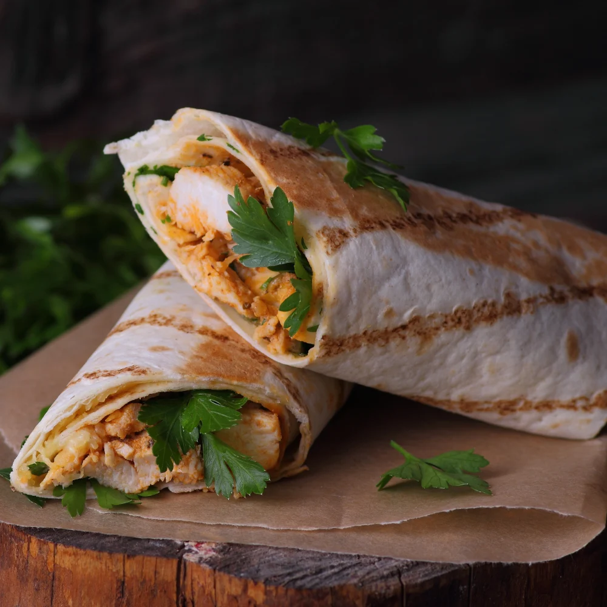

Bulking Chicken Wrap

Description:
A quick meal perfect for those seeking GAINZZZ
Time: 15 minutes Makes: 2 wraps Calories p/w: ~400
Ingredients:
- 200 grams chicken thigh or breast cut into cubes
- Spinach leaves
- 1 whole tomato sliced
- 1 cucumber sliced
- Cheese
- Any sauce or dip of choice
- 1/4 tsp of each powder:
- Chilli, turmeric, cumin, salt, pepper and garam masala
- Tortilla or wheat wrap
- 2 tbsp of oil
Method:
- Take a pan and let it warm over medium flame. Put the tortilla on it and half cook it until it is slightly crispy. Set it aside.
- Heat some oil in the pan. When the oil is hot, add the chicken cubes or shredded chicken to the pan. Sauté them for a minute. Then add the powdered spices. Sprinkle water to cook the chicken.
- Take the cooked tortilla and spread the dip or sauce over the whole surface. Place cheese and veggies in a line. Add chicken on top of everything.
- Wrap tightly in foil and enjoy now, or store for later.